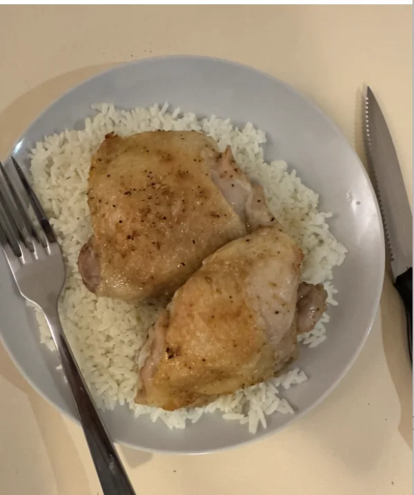
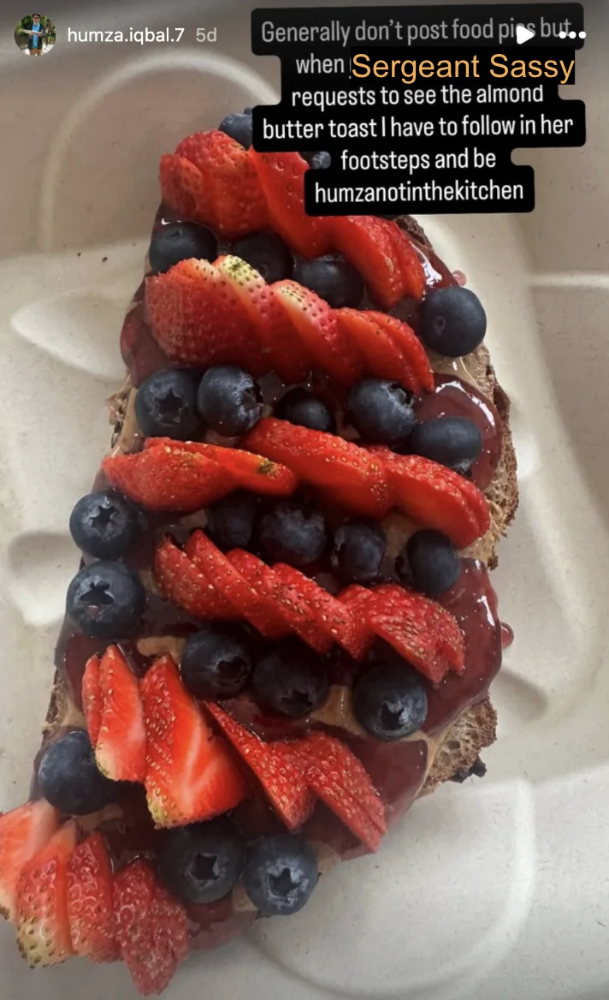
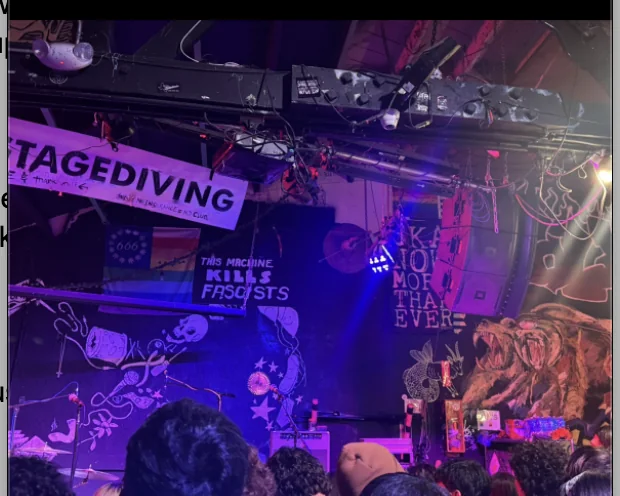
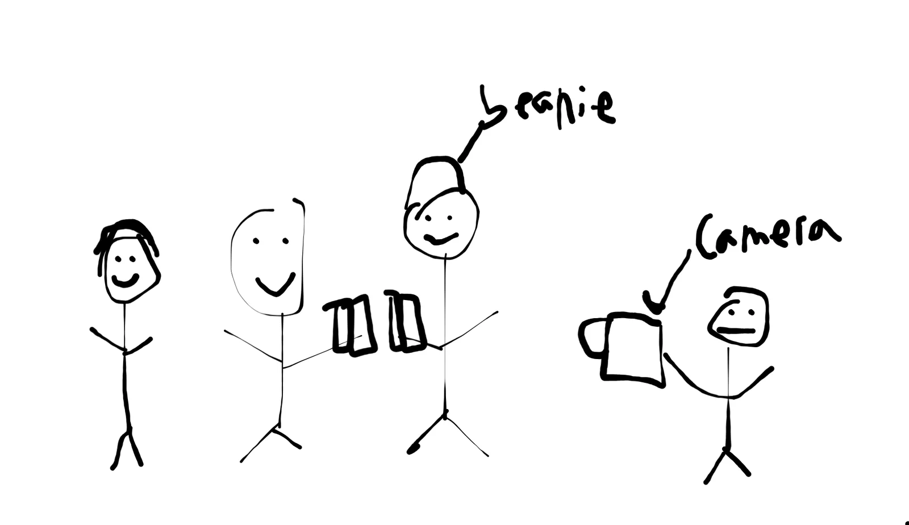
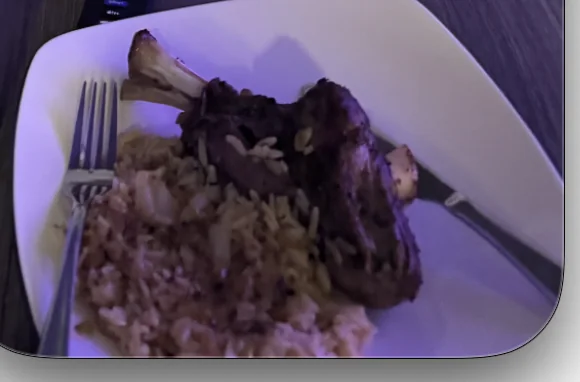

Shoutouts
Happy birthday to “The Mosher”! I greatly enjoy hearing about your kerbal space program exploits and you always come in clutch at my potlucks!
Happy birthday to “Sergeant Sassy”! You’re a really encouraging person and I really appreciate the convos we have every week when you get my newsletter.
Monday
After work I get dinner with “The Professor,” “The Quant,” and “The Game master” who I haven’t seen in quite a while. Since “The Professor” is in town it means all sorts of friends from that adjacent friend group are now popping back in which is fun to see. We went to I’a poke where I watched the gang eat poke.
From there we went to Detour and played a lot of Killer Queen. I hadn’t played the game in a while but I managed to find my stride after a bit. The teams were me and “The Game master” vs “The Professor” and “The Quant”. Originally we get put on the backfoot but “The Game master” is able to pick up quickly due to his overwhelming skill in video games.
Tuesday
Today after work I got dinner at Bon Nene with “The Professor,” “The Pickleballer,” “The Taco,” and in keeping with the trend above “The Attorney” and “High Entropy” whom I haven’t seen in a while.
I actually ordered here as I knew I’d need food before (or rather during) my government class. The Gyudon I got wound up being pretty reasonable.
Today the government class focused on Ballot Measures and how they can come to be. One question you may have (I certainly did) is why we get so many ballot measures in SF. There are a few different reasons for this
Certain things such as Bonds or changes to the SF Charter (https://codelibrary.amlegal.com/codes/san_francisco/latest/sf_charter/0-0-0-52610) must be done via a vote of the people
More interestingly it can be politically advantageous to put things on ballots that may pass normally through the Board of Supervisors. To give an example if you’re a Mayor up for election you can put an ordinance on the ballot by yourself and by pushing it through you can score political points you otherwise wouldn’t have if said ordinance passed through the standard Board of Supervisors vote
When I was thinking about taking this class one thing that really stuck out was that I don’t understand a lot of the ballot measures I got so this really resonated with me.
Wednesday
Today after work I went to Midnight Runners with a brief appearance from “The Quant”. Unfortunately I made the mistake of eating 2 quarter pounder burgers and I could feel it starting in the second mile. If I did anything faster than 8:30/mile my stomach was not gonna be a happy camper.
After 3 miles I left and went to “The Philosopher’s” place to learn how to make chicken. As part of my glow up he’s helping me learn how to cook which I’m quite grateful for. Today we went through a basic recipe for chicken thighs which works as follows
Preheat the oven
Take the chicken thighs out and dry them with a paper towel
Season them with spices of a sort all through out. We went with some garlic and paprika which were pretty solid. THe key is to massage it throughout the chicken
Put the chicken on a baking plate with aluminum foil over it and put it in the oven
While the chicken is chickening work on the rice. We need to rinse the rice which involves putting the rice in a cup and washing it X times where I’m told X can be debated amongst the rice community
Put the rice in a rice cooker.
Optionally add chicken bouillon (chicken stock) to the rice while cooking for flavor
While we were doing this I was also working on my ability to articulate flavor profiles. I lack that ability at the moment which can lead to me not being able to describe why I may like (or more importantly) dislike something which can lead to me seeming less well adjusted if I just say “X tastes bad”.
I was trying the chicken bouillon and I noted that by itself it had a very strong flavor. When pressed what exactly the flavor was I couldn’t quite say. Amusingly when I was trying to come up with flavors I said “vinegary” and “The Philosopher” had me try some vinegar and I conceded that it did not in fact taste like vinegar. I knew it tasted very strong but I couldn’t profile the exact flavor. The correct answer was in fact just that it tasted too strong.
Once that was done the chicken was out of the oven and the rice was cooked and we were ready to go to chicken street!

The chicken itself tasted good (it’s no beef or lamb but it’s chicken), and I was satisfied that now I could cook a meal!
Afterwards “The Philosopher” taught me a few more cooking concepts that would be necessary for future lessons like braising and searing.
Thursday
Today after work I was supposed to get dinner with a friend but there was a bit of a miscommunication where she thought it was going to be tomorrow rather than today so I wound up just chilling and catching up on a TV show I like called Re: Zero
Friday
On my way to work I stopped by Cafe Spro and got my usual almond butter toast. This by itself isn’t newsworthy but after my last newsletter “Sergeant Sassy” wanted to see a picture of it so I decided to do something similar to what she does and post food pics on IG. For a bit of context she cooks a lot and has a whole IG dedicated to it so I decided to show her by posting publicly on IG myself for the bit.

Today after work I went to Prime BBQ with “The Professor,” “The Quant,” “The Taco,” “Mirandom thoughts,” “The Sparkle,” and an acquaintance that doesn’t have a newsletter nickname. At first I thought I would either pull a Humza or only eat a skewer or two before promptly devouring 1 rice, 2 lamb skewers, 2 beef tongues, 1 wagyu pineapple steak, 2 grilled beef sausages, 1 beef tendon, and a sweet potato fry . The place wasn’t as good as Kogi Gogi but it still hit.
We were talking about my glowup journey and the acquaintance I hadn’t seen in a while said that I reminded her of her 24 year old cousin but worse when it came to glowing up.
Afterwards I went to haru by SAMS to celebrate “The Mosher’s” birthday. I was joined by “The Mosher” of course along with “The Philosopher,” “That’s Nuts,” and “The Fisherman”. I’m now known for getting the pear juice there which means that if I’m not careful that will surpass water as the Humza special which we can’t have.
Saturday
The day begins with me going to Marina Run Club and catching up with “Top of the Rope” and her boyfriend who is in town for a bit which reminds me I have the book he recommended “Thinking fast and slow” and I have made 0 progress on reading it. I like to think that will change but in all likelihood it probably won’t.
It was a cloudy day and with “Top of the Rope” running the 10 mile run I didn’t really have much motivation to stick with it. Instead I walked back to my apartment where I would chill for a bit before meeting with “La Tacqueria Royalty,” “The Dentist,” and “The Enabler” to shop for outfits for Bay to Breakers. We thrift shop around looking at a wide variety of different things before eventually settling on Hawaiian. It strikes a nice balance of fun while not being too much effort to run in. For a bit of extra fun I’m gonna be doing a Stitch onesie as Stitch fits the Hawaiian theme. I’m gonna go up to people and say “Haai” in the drawn out way that Stitch does which should be good. When we finished the shopping we went to a brunch place near where I live called Brioche Bakery & Cafe which I never ate at despite walking by it hundreds if not thousands of times. I got the brisket burger there and it was aight. I’d have liked it more if it wasn’t quite so messy.
Afterwards I met up with “The Professor” and “The Quant” to go to Garden Creamery to see if they have the Mugicha flavor that “The Professor” wants. The person I know who works there said they don’t have it today but I’m optimistic they will have it at some point before “The Professor” leaves.
Then I went to “Sergeant Sassy’s” birthday in Dolo. She’s a big cheese lover so she made these cheese cupcakes that looked quite splendiferous. On top of that she had a cheese potluck in which a bunch of people brought different cheeses including blueberry goat cheese, brie, gouda, manchego, mascarpone and many more. There was even a dairy free cheese which I thought was pretty good. I don’t have a lot of cheese so I can’t compare it to dairy cheese but it certainly tasted a lot better than other dairy free stuff that I could tell tasted like stinky garbage without comparing it to the original.
At the party I learned that someone I know in MR designs nuclear weapons which is super cool. I asked him what he wished more people knew about it and he mentioned the strict guardrails around making them along with the fact that they are meant more for deterrence than anything else. He told me he was thinking about looking into using AI to help make them which is definitely a wild thing to think about.
While at the party I talked with the guy above and someone else about dating and I got into a long discussion about commitment. The other person told a story of how she had a subordinate that was having a hard time ramping up so they booked a meeting and she got on one knee and told the subordinate that she was committed to making sure she was successful for at least a year which really touched me. She mentioned giving her direct report a sense of psychological safety and helping them to take bigger risks at work which I greatly respect and want to take note of if I ever manage people. Tangentially she mentioned she really values commitment in general; for example she ran 30 miles for her 30th birthday and even though it was painful and she had never ran that far before she pushed through which is incredible.
After the party I met up with “The Raja of Rhythm” and we went to Berkeley to go see a concert. I hadn’t seen “The Raja of Rhythm” in a while and hit him up. He mentioned he had an extra ticket for a concert for some niche bands he likes including “Everyone asked about you” and “First Day back”.
The concert venue (924 Gilman) was a really famous venue called for its role in 90’s punk revival and apparently has associations with Bay Area punk bands like Green Day. As an added bonus they had free ear plugs.

The concert was fun! “First Day back” opened and their music definitely hit. I never thought of myself as much of a punk person but they persuaded me. For one of the songs the lead singer was also playing a violin at the same time which was great.
The downside though was that there was a moshpit in the middle of the concert with a little bit of spillover. I didn’t directly participate in the moshing but I could feel myself getting pushed around sometimes. I’d be more ok with this if we weren’t also packed pretty close together. I do think I have a mild fear of getting crowd crushed so that didn’t exactly bode well with me. I moved to the back where the crowd was thinner and that definitely helped.
We took a break after “First Day Back” during which I decided to head back a bit early. I would have liked to stay the whole time but I had an early morning tomorrow and needed to prepare for …
Sunday
Today I’m doing a photoshoot with “The Philosopher” and “The Mosher” so me and “The Mosher” can get better dating pics. Before trash pickup I have to pick out a few outfits I want and do some general tidying up to make sure I’m in photo shape.
Afterwards I went to trash pickup with “The Philosopher,” “The Notetaker,” and a surprise appearance from “Olives” who was in town for a minute. We get some advice on the proposed shoot and head off.
Note that all these places I’m going to post are but a fraction of the many shots we got. “The Philosopher” is post processing them as we speak (or I’m writing to you reader i guess),
We go to Oiishi Matcha and I get some shots of me at a boba shop
Not actually a green screen the matcha place looked like this
Afterwards we went to GGP for some naturey shots
I needed some friend shots as well so we went to Duboce Park to crash “The Professor,” “The Taco,” “The Plower,” “The Pickleballer,” “Mirandom thoughts” and some other people playing board games and getting some pictures with them. Sadly none of them are ready yet so instead here's a doodle

Afterwards we went to “The Mosher’s” place where I learned how to cook lamb. Remember when I said on Wednesday “The Philosopher” taught me what braising and searing were? Turns out I forgot all of it. He quizzed me multiple times throughout the day and I forgot pretty much every time he explained. I don’t know why but somehow cooking just doesn’t stick in my noggin as well. Eventually I got it but it took many tries.
To mog on me further when we were at Duboce “The Philosopher” made a point of asking “The Taco” who went to culinary school and she got it quite quickly.
Eventually I do learn what they are though and get to apply them to cooking lamb.
The process for cooking lamb is as follows
Preheat the oven
Take the lamb out and massage seasoning into it. This time we mainly did salt and pepper
Take the pieces and put them on a frying pan until they brown (this is searing :D).
Once brown take the lamb and put them in a pot with some kind of liquid (like wine) and put in the oven for 2+ hours. This is to break down the tissue that can make the pieces harder to eat
While the lamb was braising we watched a movie called Hardcore Henry which is less a story with a plot and more a first person perspective of a character who cant talk but kicks a lot of ass. Essentially its like a video game as a movie. It’s pretty funny while being hard to tell exactly what’s going on which makes it the perfect movie for Thursday bar nights.
The lamb turned out quite good in the end

Afterwards I walked home and called my Mom. As I was talking I realized I dropped the ball as a son. For a bit of context my Mom had a bad tooth extraction and while I checked in with her via text I never offered to actually come home and help her out despite living so close. I realized I honestly should have and need to go home to see her. To be honest the thought genuinely never occurred to me that I should go and physically check up on her but it should have. I pride myself on being there for those around me but clearly I still have a way to go.